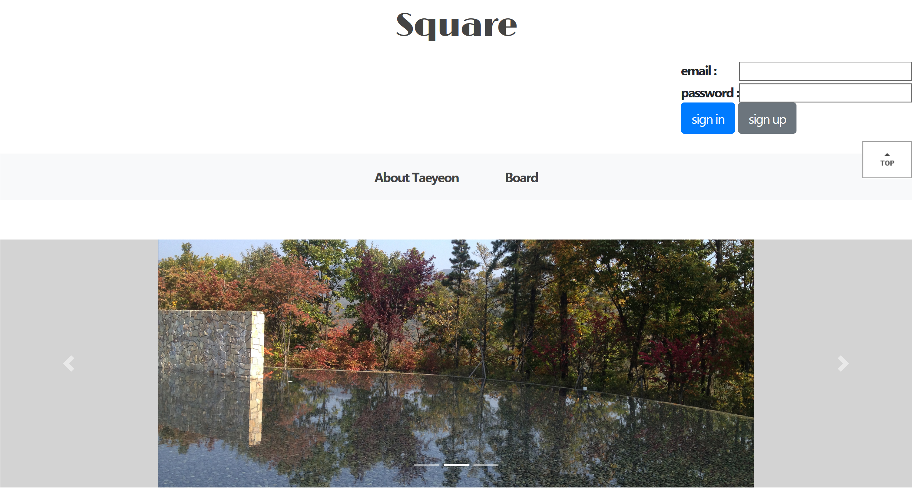
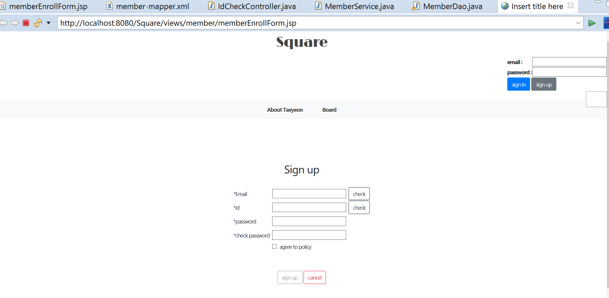
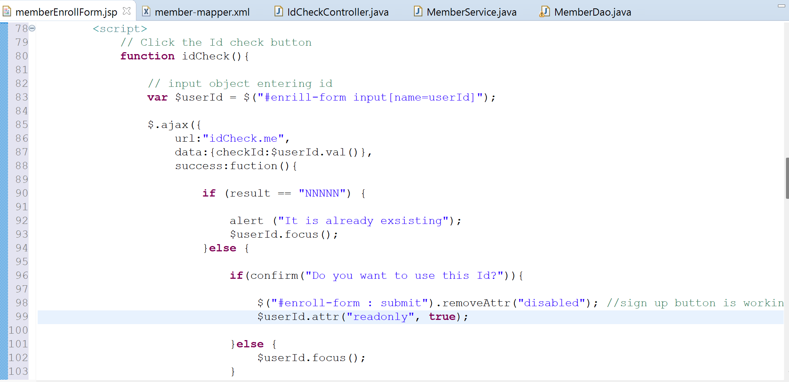
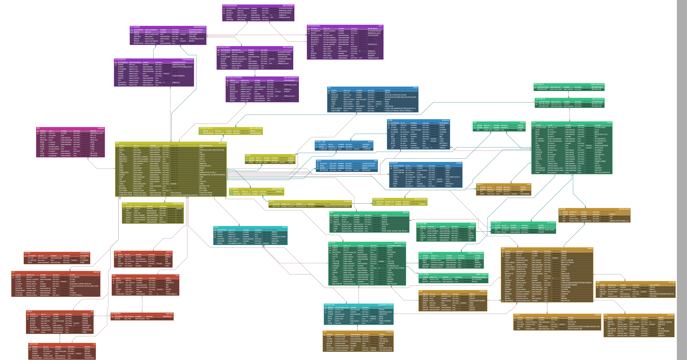

Personal Project
K Mart | Shopify website/h3> 2025.8 – 2025.8
Frontend
Built a Korean grocery online store targeting local customers in Canada using the Shopify platform
- Developed a Shopify website using GraphQL and Liquid.
- Implemented a custom theme to enhance the user experience.
- Utilized GraphQL queries to fetch product data efficiently.
- Ensured responsive design for optimal viewing on various devices.
GraphQL query to get the product information from Shopify.
The query retrieves the product's title, description, and price.
Fetching the data from the GraphQL API using the fetch function.
The response is then converted to JSON format for further processing.
PickEco | Mobile application
2022.9 – 2022.12Frontend Developer and QA
Collaborating with Company PickEco, Creating a Mobile Application as per the client's requirements
- Created test cases and performed testing on a prototype to identify bugs and inconsistencies across different operating systems.
- Conducted unit testing in React.
- Developed an application using React Native and tested it using Expo Go.
- Designed a clean and user-friendly graphical user interface (GUI) and created a prototype of an application using Figma.
- Managed the project using ZenHub in an Agile environment.
Calculate the average reaction time
2022.7 – 2022.7Application to calculate the average reaction speed of the user after clicking the button three times.
- Used JavaScript, CSS3, HTML5
- Git: https://github.com/Taeyeon-dev/ReactSpeed.git
Square | Website
2022.5 – 2022.6Full Stack Developer
Square is a forum website to discuss various opinions, share information, and reply. It allows users to write, read, edit, delete posts, and upload files.
- Developed a Java web application.
- Dynamic web pages that ensure the adaptability of updated data by using JavaScript and jQuery.
- Used Asynchronous JavaScript and XML(Ajax) to ensure the users have unique emails and ids while checking the existing data.
- Git: https://github.com/Taeyeon-dev/Square.git
Main page
Sign in Page
ID check

Set the sign up button as disabled if id is not available.
Create function idCheck when user click the check button to call the ajax method (Which url is called and What value would send when asked).
Count the number of matching id values and if greater than 0, fail = "NNNNNNN" , or same with 0 success = "NNNNNY"
Book for you (BK4U) | Website
2021.6 – 2021.8Full Stack Developer
BK4U is a book rental service website. Users select book genres of book. The admin checks the user's interest and then sends several books randomly to the user.
- Developed and designed full stack Spring framework web application.
- Writing a Table Specification during this project taught me systematic documentation of data structures and data management strategies.
- Using Use Case Diagrams in UML to model the functionality of a system and the interactions between users and conduct requirements analysis.
- When a user logs in or performs an action, JSON is used for transmitting data from the client to the server and receiving a response from the server.
- Used MyBatis connected with Oracle to build a search function and request a page list.
- Git: https://github.com/Taeyeon-dev/BookForYou.git
ERD Diagram
USECASE Diagram